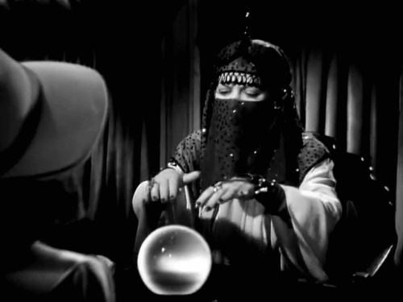

The Sky Has Been Warning Us Since 1859
The sun fired a warning shot in 1859. We had 165 years. We wrote reports, introduced legislation, held hearings — and kept building a bigger antenna. The solution to the oldest infrastructure problem in the modern world exists. It just isn't where anyone thought to look.
“Whatever can happen will happen if we make trials enough.”
Augustus De Morgan · A Budget of Paradoxes, 1872


"The most important discoveries will provide answers to questions that we do not yet know how to ask."
— According to the physicist, John Wheeler

How 165 Years of Warnings Failed to Change Our Wiring
From Carrington to near‑misses: a slow‑motion catastrophe…
Richard Carrington was sketching sunspots on September 1st, 1859, when two patches of white light erupted from the sun's surface and lasted five minutes. He had no framework for what he'd just seen. He had just become the first human to observe a solar flare, not a modest one. The energy release: roughly 10²⁵ joules. A hundred million megatons of TNT. Five minutes.
Eighteen hours later the debris arrived. Not light. Matter. Billions of tons of magnetized plasma ejected from the sun's corona, wrapped in its own magnetic field, traveling at nine million kilometers an hour. When it hit, the world went strange.
Auroras appeared over Cuba, Panama, Hawaii. Gold miners in the Rocky Mountains woke at 1 a.m. thinking it was dawn. Telegraph stations caught fire across North America and Europe. Operators received severe electric shocks from equipment disconnected from its own batteries. In Washington D.C., bystanders watched a spark jump from a telegraph operator's forehead. The wire, the only large-scale conductive network on the planet, had become the sun's weapon against us.
That was the entirety of our electrical exposure in 1859. One wire.
Now consider what we have built since.
The popular confusion is between the flare and what follows it. A solar flare is electromagnetic radiation, you know, like X-rays, extreme ultraviolet that get released when the sun's magnetic field lines snap. It travels at the speed of light. By the time you see the flash, the radiation has already hit the upper atmosphere. The atmosphere absorbs it. You survive.
Coronal Mass EjectionA billion-ton eruption of magnetized plasma from the sun’s corona — the slow, heavy sibling of a solar flare, and the part that actually hits the grid.In the Lexicon →The coronal mass ejection is something else. When those field lines snap, they don't just release light, they physically rip a chunk of the sun's atmosphere loose and throw it into space. The flare is the muzzle flash. The CME is the bullet. And the bullet, when it hits Earth's magnetic field with the right orientation, does something specific: it grabs the field and stretches it.
Earth's magnetosphere ordinarily deflects the plasma, funnels charged particles toward the poles, produces auroras. But when a CME's magnetic field points south, opposite to Earth's northward equatorial field, the fields don't repel. They merge. The magnetotail stretches hundreds of thousands of miles into space, stores tension like a drawn bow, and eventually snaps back. That snapback is a geomagnetic storm. And a geomagnetic storm, at scale, is Faraday's law applied to civilization: a changing magnetic field induces electrical current in any conductor of sufficient length.
In 1859, sufficient length meant telegraph wire. Today it means everything. The entire grid. Every long-distance pipeline. Every transoceanic cable. Every transmission line spanning the countryside.
We didn't build a civilization since 1859. We built an antenna.
The Carrington Event is treated as legend. Pre-electricity, pre-modernity, filed away as irrelevant. This is a cognitive error, not a historical judgment. The physics hasn't changed. The sun hasn't changed. What changed is what we put in front of it.
March 13, 1989 — a sub-Carrington storm collapsed the Hydro-Québec grid in 92 seconds, six million people dark. (NASA/NOAA)On March 13, 1989, a geomagnetic storm that was smaller than Carrington hit the Hydro-Québec grid. In 92 seconds, the entire province lost power. Six million people in a Canadian winter. The mechanism was precise: geomagnetically induced currents overwhelmed the transformers, the protective relays tripped in cascade, and the grid fell faster than any operator could respond. Weeks of recovery. Hundreds of millions in damage.
In July 2012, a Carrington-class CME erupted from the sun, crossed Earth's orbital path, and missed us by nine days. Not metaphorically, literally nine days. We know because it struck the STEREO-A spacecraft in Earth's orbital plane. Daniel Baker and colleagues measured it and published in Space Weather in 2013. Their conclusion: a direct hit. The National Academy of Sciences had already put the damage estimate at $2.6 trillion for North American infrastructure alone, with recovery measured not in weeks but in years. Possibly a decade.
Nine days.
In 2012, Maehara and colleagues published in Nature an analysis of solar-type stars observed by the Kepler Space Telescope. They found superflares, events releasing 100 to 1,000 times more energy than Carrington, on ten sun-like stars. Not rare anomalies. Present in the sample Kepler happened to be watching. The sun is statistically capable of worse than 1859. Possibly much worse.
Lay the evidence out chronologically and it doesn't read like a scientific discovery unfolding. It reads like a civilization being handed the same warning, in increasingly precise terms, and choosing not to open it.
The machinery of a geomagnetic storm doesn't produce a large power outage. It produces something categorically different, and the distinction is the whole problem.
A conventional outage fails the distribution infrastructure. The hardware survives. Restoration is rerouting and restarting in hours, days at most.
The geomagnetically induced currents from a Carrington-class storm are low-frequency direct current surging into systems designed exclusively for alternating current. This causes half-cycle saturation in the magnetic cores of high-voltage transformers. The core can't process AC while saturated with DC. The excess energy becomes heat. The cooling oil boils. The insulation combusts. The copper windings melt. The transformer destroys itself from the inside.
High-voltage transformers weigh hundreds of tons. They are precision-engineered to specification. Under normal conditions, manufacturing a single large unit takes six to eighteen months. The facilities that build them are concentrated in a handful of countries. Those facilities require electricity to operate.
So the event destroys the hardware, and repairing the hardware requires the infrastructure the event just destroyed. Recovery estimates for the United States alone: four to ten years. In that interval — no refrigeration, no water pressure, no fuel pumping, no banking, no supply chains, no hospital power past the diesel reserves. Not a sequence of failures. A simultaneous collapse of every system that assumes the substrate is permanent.
The substrate is not permanent. It is fragile in a specific, well-documented way, with a known cause, a known mechanism, and a known timescale of recurrence.
The 1989 Quebec event produced Congressional hearings. The vulnerability of the North American grid to geomagnetically induced currents was documented in technical detail by utility engineers and government agencies throughout the 1990s and 2000s. The SHIELD Act — proposing basic hardening requirements for critical transformers — was introduced in the U.S. House of Representatives in 2011. Reintroduced in subsequent sessions. Never passed.
The 2012 near-miss generated academic papers and a brief media cycle. Then nothing.
DC-blocking capacitors that prevent geomagnetically induced currents from reaching transformer cores are not exotic technology. Deploying them across critical nodes in the North American grid has been estimated at roughly 1 billion. The damage estimate for a Carrington-level event: 2.6 trillion in immediate infrastructure loss. The ratio is 1-to-2,600. No rational cost-benefit calculation produces inaction.
The problem isn't that the threat is unknown. The problem is that it operates on a timescale every institution we've built is optimized to ignore. Quarterly earnings. Election cycles. Budget horizons. Insurance tables that price risk from recent claims history. Regulatory bodies structured to respond to events that have already happened. Capital processes that discount future catastrophe the same way they discount future profit, heavily, by default.
~12%odds of a Carrington-class storm, per decade · Riley, Space Weather 2012A 12% probability per decade sounds manageable in a given year. Across a corporate planning horizon of three to five years, it barely registers. Across a human lifetime of seventy years, it is a coin flip. The math is not complicated. The institutions aren't built to see it.
There is also a specific political problem. The actual defence against a Carrington-level event — preventative blackouts, taking transformers offline before the storm arrives — requires a politician to voluntarily darken their region based on a forecast. If the forecast is slightly off and the storm grazes rather than strikes, the politician who ordered the blackout looks like an expensive fool. If they don't act and the forecast was right, the grid is gone for a decade. It is a prisoner's dilemma at civilizational scale, and the incentive structure reliably produces the wrong answer.
So we watch. We document. We publish. We reintroduce legislation. We hold hearings.
We keep building wire.
There is a pattern in how civilizations actually produce resilient infrastructure, and it is not the pattern we assume.
The assumption is that resilience comes from institutions charged with producing it — defense agencies, regulators, standards bodies, the people whose explicit job is to prepare for catastrophe. What actually happens is different. Resilient systems tend to emerge as a side effect of solving a concrete, immediate, economically painful problem under real constraints. The constraints force design choices that happen to produce robustness. The robustness was not the goal. It was a consequence.
The internet's distributed architecture, the feature that makes it notoriously difficult to destroy, was not designed for resilience in the abstract. It was designed to route around node failures in a specific Cold War context. Resilience was a structural byproduct of solving for packet routing under unreliable conditions.
If 165 years of documented warning, two direct proof-of-concept events, and multiple near-misses have not produced meaningful grid hardening through the institutions assigned to produce it, the question worth sitting with is not why those institutions have failed. The question is where the hardening actually comes from, if it comes at all.
A system that survives a geomagnetic storm has specific properties. It carries no long conductive paths that act as antennas for induced current. It harvests energy from sources the storm cannot interrupt. It operates in distributed mesh rather than centralized hub-and-spoke. It stores intelligence locally rather than in cloud infrastructure that requires the grid to function. It has operating modes designed for the absence of connectivity, not as failure states, but as intended conditions.
These are not aspirational requirements. They are engineering constraints. And constraints that are real and economically enforced get solved, not by the institution tasked with solving them, but by whoever had a different problem that turned out to share the same shape.
We have known since 1859 that the sun can end the world we've built. We have spent 165 years building more of it.
Somewhere right now, someone is solving a problem that has nothing to do with solar resilience. The constraints of their problem have forced them to eliminate every dependency a Carrington-level event would destroy. They are not thinking about the grid. They are thinking about their problem.
The question, the one without a comfortable answer, is whether the solution to our oldest, most thoroughly documented, most consistently ignored infrastructure vulnerability is already sitting somewhere, doing something else entirely.
And whether, by the time we think to look there, it will be too late to ask.
Don't miss the weekly roundup of articles and videos from the week in the form of these Pearls of Wisdom. Click to listen in and learn about tomorrow, today.


Sign up now to read the post and get access to the full library of posts for subscribers only.
 🌶️ iamkhayyam
🌶️ iamkhayyam
About the Author
Khayyam Wakil studies the gap between what civilisations know and what they build.
On September 1st, 1859, Richard Carrington watched the sun fire a warning shot. Every electrical system on Earth was vulnerable. We had 165 years to do something about it. We wrote reports.
He is the founder of CacheCow Agriculture Inc. — which is either a livestock intelligence company or the only EMP-hardened food security infrastructure being built without anyone asking for it, depending on when you're reading this.
The answer to the oldest infrastructure problem in the modern world is probably already in a field somewhere. He finds that funny. And clarifying.
He does not maintain a social media presence — with the exception of Linkedin — which he acknowledges is a privilege, and a fact he finds genuinely uncomfortable.
Token Wisdom is where he writes while the work is still warm.
Subscribe at https://ghost-production-198e.up.railway.app
#thebillcomesdue #longread | 🧠⚡ | #tokenwisdom #thelessyouknow 🌈✨